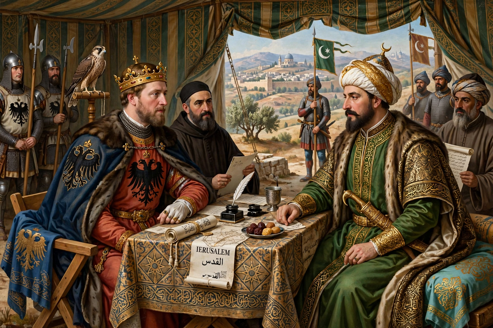

The Treaty of Jaffa was a peace agreement signed in February 1229 between the Holy Roman Emperor Frederick II and the Ayyubid Sultan al-Kamil of Egypt, concluding the Sixth Crusade. Remarkably, it achieved what five previous crusades had not: the return of Jerusalem to Christian control — accomplished almost entirely by diplomacy rather than battle. The treaty granted the Christians Jerusalem, Bethlehem, Nazareth and a corridor to the coast for ten years, while Muslim control of the Temple Mount (Haram al-Sharif), including the Dome of the Rock and al-Aqsa Mosque, was preserved.

| Treaty of Jaffa | |
|---|---|
| Signed | 18 February 1229 |
| Location | Jaffa |
| Signatories | Frederick II, Holy Roman Emperor; al-Kamil, Sultan of Egypt |
| Context | Sixth Crusade |
| Term | Truce of ten years |
Frederick II had repeatedly promised to go on crusade and had married Isabella II of Jerusalem, giving him a claim to its crown — but he had also been excommunicated by Pope Gregory IX for his delays. When he finally sailed in 1228, still excommunicate, his small army in the Levant was ill-suited to a major campaign. Al-Kamil, for his part, was preoccupied with rivals in Syria and had already floated trading Jerusalem for an alliance against his nephew al-Nasir Dawud of Damascus. Frederick — who spoke Arabic and admired Islamic learning — was an ideal negotiating partner.
Under the treaty, the Franks received Jerusalem (with the exception of the Haram al-Sharif, which remained under Muslim administration and open to Muslim worship), Bethlehem, Nazareth, the castle of Toron, Sidon, and a strip of territory connecting Jerusalem to the coast at Jaffa and Acre. The walls of Jerusalem, demolished a decade earlier, were not to be rebuilt, leaving the city militarily indefensible, and a truce of ten years, five months and forty days was agreed. Frederick entered Jerusalem on 17 March 1229 and crowned himself king in the Church of the Holy Sepulchre the following day.
The settlement was condemned on both sides: the Latin Patriarch Gerold denounced it, placed Jerusalem under interdict, and complained that the city was untenable and its holiest shrines shared; Muslim chroniclers lamented the surrender of the third holiest city of Islam. Yet the treaty kept Jerusalem in Christian hands until 1244, when Khwarazmian mercenaries sacked the city. It remains a famous example of crusading achieved by negotiation — Frederick's "crusade without a sword".
Sixth Crusade · Frederick II · Al-Kamil · Kingdom of Jerusalem
From Wikipedia, the free encyclopedia.